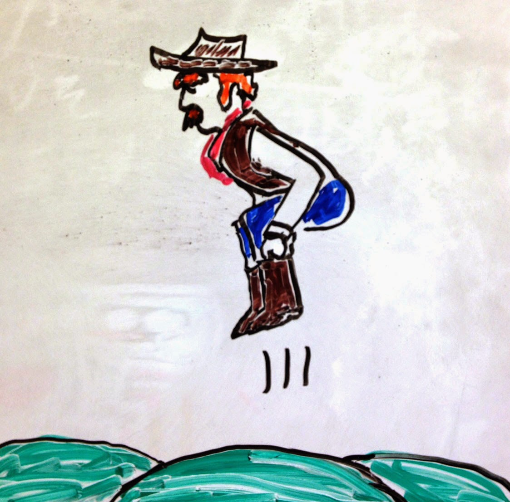
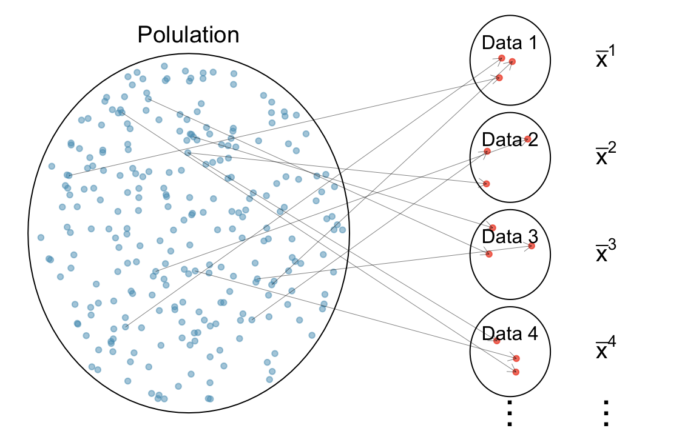
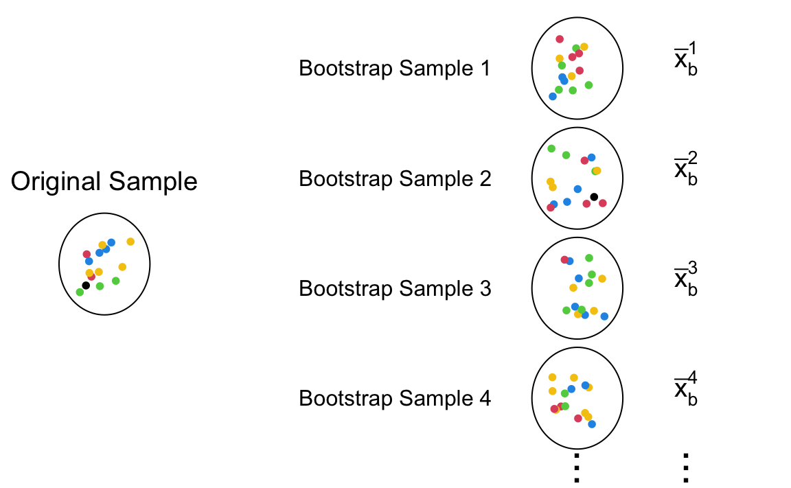
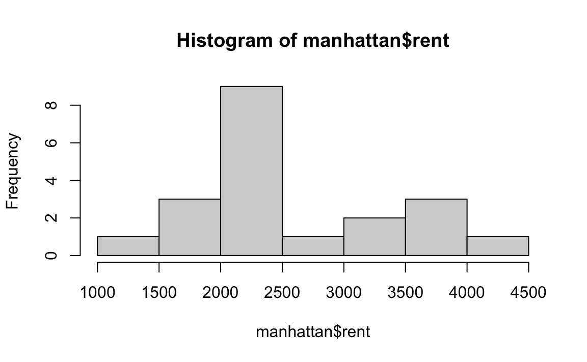
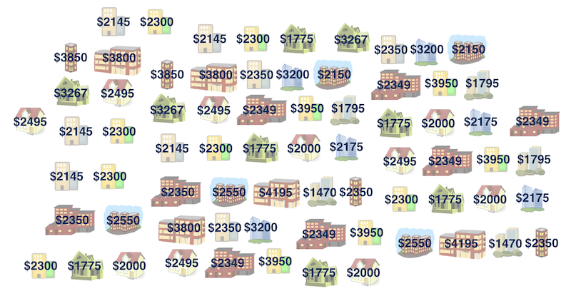
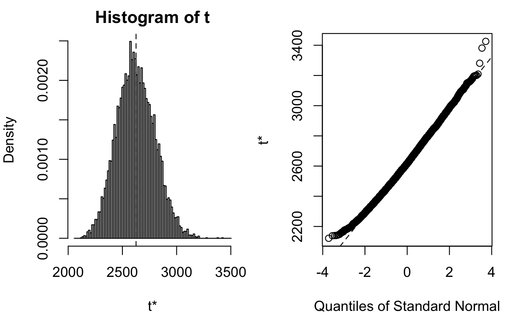

14 Bootstrapping
So far we learn that
When the population is Gaussian, the sampling distribution of sample mean is also Gaussian.
When the population follows a non-Gaussian distribution with finite mean and standard deviation, with the central limit theorem, the sampling distribution of sample mean gets closer to a Gaussian distribution as the sample size gets large.
What will the sampling distribution of the sample mean look like? How do we construct a confidence interval without using the formula based on the normal distribution?
In this chapter we will learn the statistical computing method bootstrapping that quantifies the uncertainty about the unknown parameters without distribution assumptions on the population. The term bootstrapping comes from the old saying “pull oneself up by one’s bootstraps”, meaning that one accomplishes an impossible task without others’ help. In statistics, bootstrapping does not rely on any information about the target distribution or interested quantity (estimand). It estimates a population parameter using data from only the given single sample dataset, without CI formula and replicates of data. I call such task “impossible” task, but that’s basically what statistical inference usually does.
Bootstrapping can be applied in many situations, even for large sample size. It is a very popular method in statistics and machine learning. There are numerous variants of boostrapping methods, and here we focus on the main idea of the method, and how we can apply it to construct a confidence interval for the population mean. Please read IMS chapter 12 for details about confidence intervals with bootstrapping.
14.1 Idea of Bootstrapping
Bootstrapping is a resampling method that repeatedly generates the bootstrap samples from the data at hand with replacement. Each bootstrap sample data are of the same size of the original observed data. For each bootstrap sample, we calculate our interested statistic, for example the (bootstrap) sample mean. Then the collection of the sample means calculated from the bootstrap samples forms the sampling distribution of the sample mean. Therefore, bootstrapping models how a statistic varies from one sample to another taken from the population. This approach provides insights into how much the statistic deviates from the parameter of interest.
The main idea of bootstrapping is that
We view the observed data as the target population
We treat the bootstrap samples as the replicates of the samples from the population
We use the collection of bootstrap samples to mimic the collection of samples generated from the target population, which is the sampling distribution of the sample statistic.
Let’s figure out the idea behind it step by step. Suppose there is a target population, and we want to estimate its mean \(\mu\) possibly with uncertainty quantification. Usually our first step is to collect our sample data from the population, and use the sample mean \(\bar{x}\) to estimate \(\mu\). Due to resources constraint, we may only be able to collect one single data set, and the sample size can’t be large. We hope the data set is quite representative of the population, so that \(\bar{x}\) is quite close to \(\mu\). In other words, if we were expanding the sample data proportionally, having the sample size same as the population size, the population and the expanded sample data should look very alike. Figure 14.1 illustrate this idea.

However, due to the sampling variability, we never know whether or not the one we collect is representative enough. Even we know the data at hand looks pretty similar to the population, we are not sure how much we are confident about the estimation, unless we have lots of sample data replicates.

By taking repeated samples from the population, the variability from sample to sample can be observed. In Figure 14.2 the repeated samples are obviously different both from each other and from the original population. The samples were taken from the same population, and the differences are due entirely to natural variability in the sampling procedure. By summarizing each of the samples (sample mean), we see, directly, the variability of the sample mean from sample to sample. This is exactly the idea of sampling distribution we learn in Chapter 11 illustrated in Figure 11.2. The problem again is that quite often it is difficult to obtain sample replicates, and quantify the variability. How do we solve this problem? Smart statisticians came up with a solution: apply exactly the same idea just mentioned to the one single sample data set we have at hand!
We can think that our sample data is a small version of the target population. The illustration of bootstrapping is shown in Figure 14.3. Suppose the collected sample data from some population has 10 data points. To have sample data replicates, the data work as if our population, and the new sample replicates are generated from the original data set. These new data replicates are called bootstrap samples. The bootstrap samples must have the same sample size as the original sample data. So they all have 10 data points too. Additionally, these samples are drawn from the original data with replacement. Think about it, if they are drawn without replacement, all the bootstrap samples will be exactly the same as the original sample, which does not work for accounting sampling variability. Note that the elements in the bootstrap samples are already collected and saved in our original data. The resampling step does not really conduct any new experiments, perform any new trials, or do any new survey as sampling from the target population does that may be too costly for our study. We save our study by our bootstraps.

The original sample in Figure 14.3 has 1 blacks, 2 reds, 3 greens, 4 blues, and 5 yellows. If the sample is representative of the target population, the color distribution in the population should more or less follow the color distribution in the data, although not exactly the same with pretty high chance. To mimic the sampling variability found by collecting data from a population, sampling with replacement produces some variations while keeping the general distribution pattern shown in the data. As a results, the bootstrap samples tend to have more yellows and blues, but could have more reds or greens. It is such resampling variation that creates the sampling variability in the computed bootstrap statistics \(\bar{x}_b^1, \dots, \bar{x}_b^M\).
The entire workflow of sampling and resampling is illustrated in Figure 14.4. First, the original sample is collected from the target population. Usually we only have one data set. To ensure that the data look similar to the population, we hope the sample is a random sample. Next, in the resampling step, we draw samples with replacement, replicating several bootstrap samples. Then for each bootstrap sample, the desired statistic is computed. Finally, the collection of all the bootstrap statistics forms a bootstrap distribution that is used to approximate the sampling distribution of the desired statistic. With the distribution, we now can create the bootstrap confidence interval for the target population parameter.

14.2 Bootstrap Confidence Interval
In this section we learn to create a bootstrap confidence interval using a real data set. This example is borrowed from STA 199 by Dr. Çetinkaya-Rundel.
How much do you think it costs to rent a typical one bedroom apartment in Manhattan NYC? Well if you have no idea, at least we can say we are 100% confident that the average one-bedroom rent in Manhattan is between 0 to one million dollars. It’s not helping though. Let’s have some data, and get an idea of the rent in Manhattan NYC. The data manhattan.csv consider 20 one-bedroom apartments that were randomly selected on Craigslist Manhattan from apartments listed as “by owner”.
The minimum rent is $1470 and the rent can be as high as near $4200. 1

If we want to estimate the (population) mean one-bedroom rent in Manhattan, an easy point estimate is the sample mean, which is about $ 2625.8. However, considering the entire rental housing market in Manhattan, this sample is so small, so we are not that convinced of that number, and want a range of plausible mean one-bedroom rent for us to decide whether we rent a bedroom there.

Sample median = $2625.8

Population median = ❓
The question is what’s our bootstrap population look like that we can sample from? Well the idea is that we assume that there are probably more apartments like the ones in our observed sample in the population as well. So here, basically the bootstrap artificial population is made from our sample data, and the population is like so many replicates of our given sample. Again, this is an artificial population, not the real population. If I had the real population, no inference or estimation is needed. We know the truth. Right?
Bootstrapping using R
The good news is that there are several R packages out there to help us do bootstrapping without the need to write long lines of code. Here we use the boot() function in the boot package for demonstration. Before calling boot, we still need to write a function that returns the statistic(s) that you would like to bootstrap. The first argument passed to the function should be your dataset. The second argument can be an index vector of the observations in your dataset to use or a frequency or weight vector that informs the sampling probabilities. For example, if our statistic is sample mean, we can create a function mean_fcn() as follows.
The function compute the mean of resampled data. The index argument is for resampling our data. It tells us which data points in the original data will be chosen to create a bootstrap sample. We don’t need to generate the index vector ourselves, and the boot() function will use the function like sample() to generate it for us.
We can now use the boot() command, providing our dataset name, our function, and the number of bootstrap samples to be drawn.
The three required arguments of boot() are data, statistic, and R. We specify the data as a vector, matrix or data frame. Here manhattan$rent is a vector. The argument statistic is a function which when applied to data returns a vector containing the statistic(s) of interest. This is what mean_fcn is doing. The argument R is the number of bootstrap replicates. We generate 10000 bootstrap samples, and 10000 corresponding bootstrap sample means. The boostrapping result is saved in the object boot_mean which is a list. boot_mean$t0 saves the sample mean from the original data, and boot_mean$t saves the 10000 bootstrap sample means. The bias shown in the printed output comes from mean(boot_mean$t) - boot$t0, i.e., the difference between the mean of bootstrap sample means and the original sample mean. This is an estimate of the difference between the original sample mean and the population mean. The std. error is derived from sd(boot_mean$t) that estimates the variance of the sample mean.
boot_mean
#
# ORDINARY NONPARAMETRIC BOOTSTRAP
#
#
# Call:
# boot(data = manhattan$rent, statistic = mean_fcn, R = 10000)
#
#
# Bootstrap Statistics :
# original bias std. error
# t1* 2626 -1.76 175mean(boot_mean$t) - boot_mean$t0
# [1] -1.76sd(boot_mean$t)
# [1] 175To show the bootstrap sampling distribution of sample mean (one-bedroom rent in Manhattan), we can simply use plot() command:
plot(x = boot_mean)
Using the boot.ci command, we can generate several types of confidence intervals from our bootstrap samples. By default, the function provides four different 95% confidence intervals.
boot.ci(boot.out = boot_mean)
# BOOTSTRAP CONFIDENCE INTERVAL CALCULATIONS
# Based on 10000 bootstrap replicates
#
# CALL :
# boot.ci(boot.out = boot_mean)
#
# Intervals :
# Level Normal Basic
# 95% (2285, 2970 ) (2273, 2955 )
#
# Level Percentile BCa
# 95% (2297, 2978 ) (2326, 3015 )
# Calculations and Intervals on Original ScaleWe don’t need to worry too much about which interval we should use at this moment. When the bootstrap distribution is symmetric and looks like Gaussian, those intervals are pretty similar. Second, those intervals are not exact but approximate by its nature. They vary every time we run a new bootstrapping (unless we use the same random seed). We accept this random variation. The point is, this range of plausible values gives us a general idea of how much the mean one-bedroom rent is.
Check UCLA tutorial for more details about implementing bootstrapping using the boot package.
Bootstrapped confidence interval
-
Take a bootstrap sample
- a random sample taken with replacement from the original sample, of the same size as the original sample.
-
Calculate the bootstrap statistic
- a statistic such as mean, median, proportion, slope, etc. computed on the bootstrap samples.
-
Repeat steps (1) and (2) many times to create a bootstrap distribution
- a distribution of bootstrap statistics.
-
Calculate the bounds of the \((1-\alpha)100\%\) confidence interval
- the middle \((1-\alpha)100\%\) of the bootstrap distribution
#
# ORDINARY NONPARAMETRIC BOOTSTRAP
#
#
# Call:
# boot(data = manhattan$rent, statistic = mean_fcn, R = 10000)
#
#
# Bootstrap Statistics :
# original bias std. error
# t1* 2626 -1.76 175
# BOOTSTRAP CONFIDENCE INTERVAL CALCULATIONS
# Based on 10000 bootstrap replicates
#
# CALL :
# boot.ci(boot.out = boot_mean)
#
# Intervals :
# Level Normal Basic
# 95% (2285, 2970 ) (2273, 2955 )
#
# Level Percentile BCa
# 95% (2297, 2978 ) (2326, 3015 )
# Calculations and Intervals on Original Scale
Note
There are two sources of error in bootstrap inference:
The error induced by using a particular sample to represent the population. If the sample data do not represent the population well, any bias caused by that will remain in bootstrapping. Unfortunately this error cannot be corrected.
The sampling error produced by failing to enumerate all bootstrap samples. When sample size is \(n\), if we distinguish the order of elements in the bootstrap samples and treat all of the elements of the original sample as distinct (even when some have the same values) then there are \(n^n\) bootstrap samples, each occurring with probability \(1/n^n\). This source of error can be controlled by making the number of bootstrap replications sufficiently large.
14.3 Further Readings and References
The housing market in the U.S. has been going crazy, and the rent this year of course is much higher than the rent shown in this data set.↩︎